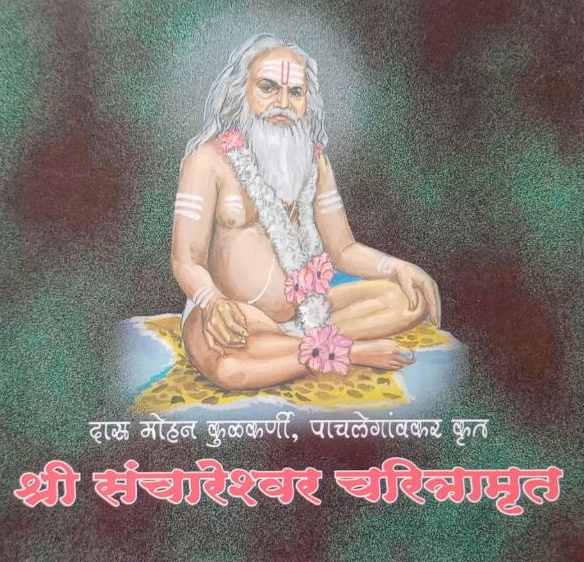

|| श्री संचारेश्वर चरित्रामृत ||

श्री संचारेश्वर चरित्रामृत
श्री संचारेश्वर पंचपदी
श्री संचारेश्वर बावणी
व्हिडिओ गॅलरी
ऑडिओ गॅलरी
फोटो गॅलरी
सोशल मिडिया
वार्षिक उत्सव
अँड्रॉइड ॲप्लिकेशन
देणगी
संपर्क